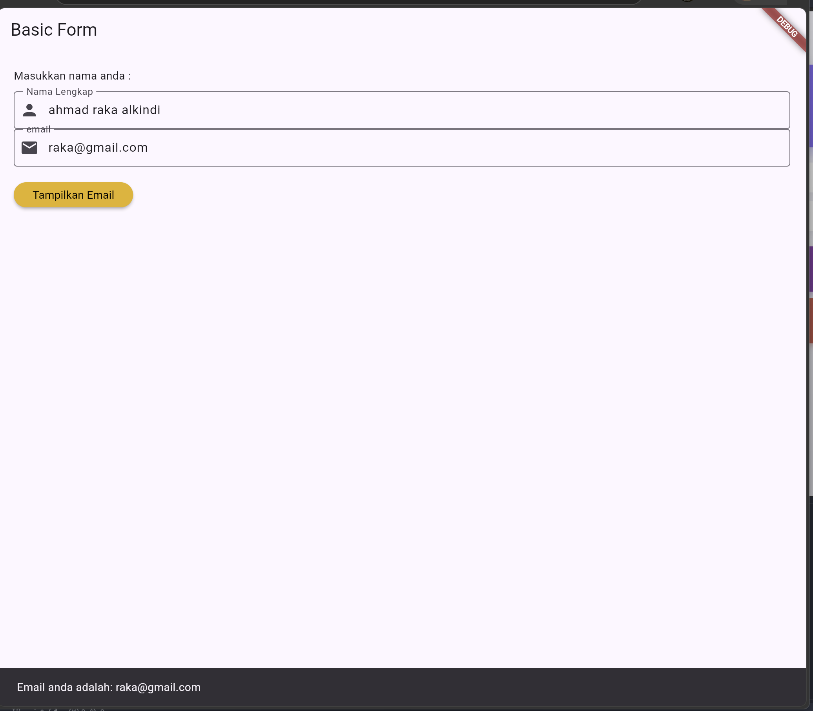
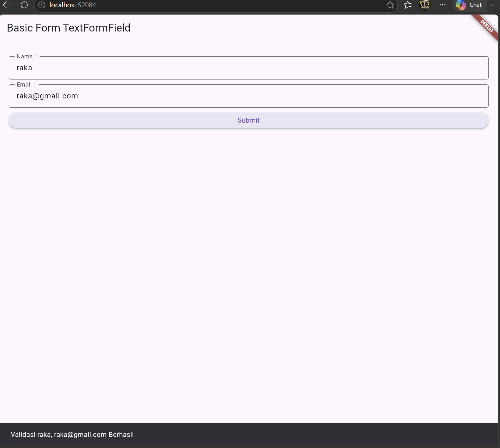
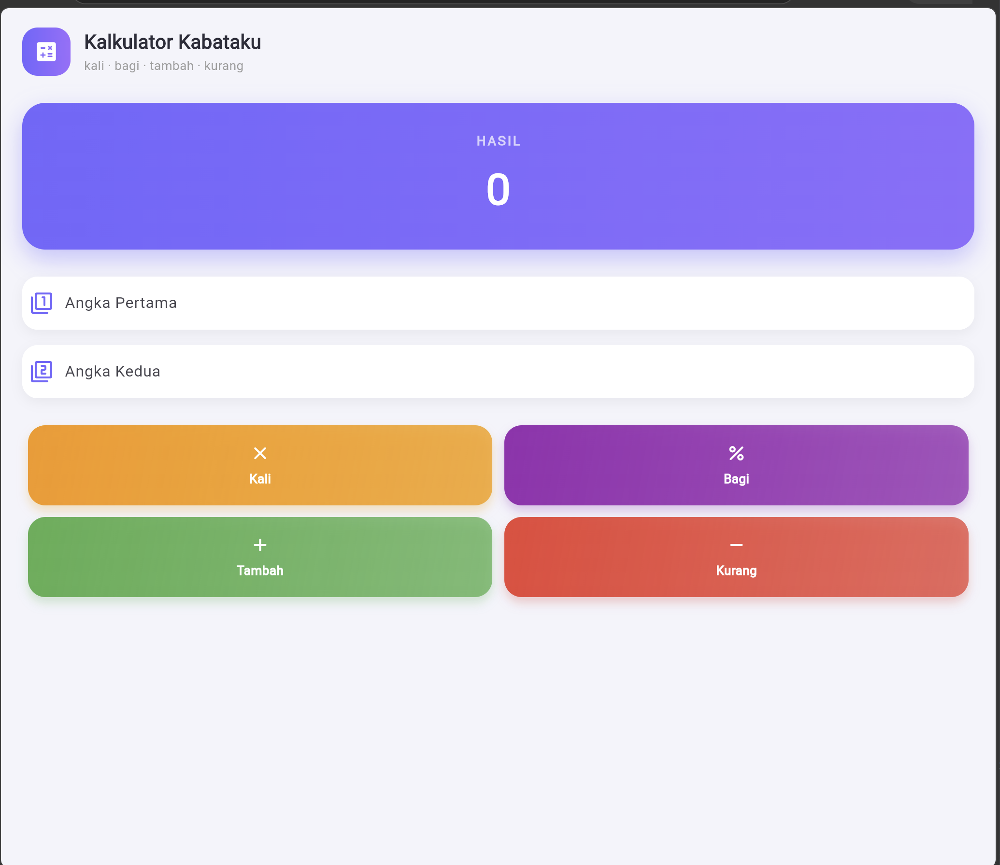

Laporan Praktikum Pemrograman Aplikasi Mobile
Input Widgets, Basic Form, dan Implementasi Aplikasi Kalkulator
Oleh:
AHMAD RAKA ALKINDI
NIM. 2411533017
Dosen Pengampu:
NURFIAH, S.ST, M.Kom.
Mata Kuliah:
PEMROGRAMAN APLIKASI MOBILE
Fakultas Teknologi Informasi
Universitas Andalas
Padang
A. Pendahuluan
Praktikum ini berfokus pada penguasaan Input Widgets dan Basic Form dalam framework Flutter. Form merupakan komponen inti dalam aplikasi mobile yang berfungsi menerima, mengontrol, dan memvalidasi inputan teks dari pengguna melalui keyboard. Konsep dan widget utama yang dipelajari pada praktikum ini meliputi:
a. TextField & TextFormField
Widget inputan teks dasar dan versi lengkap yang terintegrasi dengan fungsi validasi otomatis menggunakan FormState.
b. TextEditingController
Objek pengontrol yang digunakan untuk mengekstrak, mengelola, serta membersihkan nilai teks yang dimasukkan oleh pengguna.
c. GlobalKey<FormState> & validate()
Identifikator unik untuk mengakses status Form dan mengeksekusi pemeriksaan aturan validator pada setiap field.
d. State Management dengan setState()
Method untuk memberi tahu Flutter bahwa terjadi perubahan variabel state agar UI diperbarui (rebuild) secara dinamis.
B. Tujuan
Tujuan dari praktikum ini adalah agar mahasiswa mampu membuat dan mengontrol input widgets untuk menerima data dari keyboard, mengelola status validasi formulir, mengimplementasikan method setState() untuk pembaruan
UI, serta membangun aplikasi kalkulator sederhana yang mampu menjalankan operasi aritmatika dasar (Kali, Bagi, Tambah, Kurang / Kabataku).
C. Isi & Langkah Kerja
Pengerjaan praktikum dibagi menjadi eksplorasi materi dasar TextField/TextFormField dan pemecahan tugas praktikum yaitu pembuatan Aplikasi Kalkulator Kabataku. Berikut adalah alur dan dokumentasi langkah
kerjanya:
LANGKAH 1: EKSPORASI WIDGET TEXTFIELD & TEXTFORMFIELD
Membuat struktur form dasar menggunakan TextEditingController untuk menangkap data dari field inputan, serta menerapkan GlobalKey<FormState> untuk memvalidasi teks agar tidak kosong atau
sesuai format.

Gambar 1: Uji Coba Input Teks Dasar & SnackBar
Gambar 2TextEditingController _controller = TextEditingController();_formKey.currentState!.validate()
LANGKAH 2: IMPLEMENTASI KALKULATOR KABATAKU
Mengembangkan aplikasi kalkulator sesuai penugasan praktikum. Menggunakan dua unit TextFormField bertipe TextInputType.number untuk menerima Angka Pertama dan Angka Kedua, barisan
ElevatedButton untuk eksekusi (+, -, *, /), serta widget Text yang dirender ulang melalui setState() untuk menampilkan hasil kalkulasi.

Gambar 3: Input Angka Pertama dan Angka KeduaTambah (+), Kurang (-), Kali (*), Bagi (/) dengan penanganan pembagian dengan angka 0.
LANGKAH 3: SOURCE CODE KODE PROGRAM FLUTTER
Berikut adalah source code lengkap implementasi Kalkulator Kabataku menggunakan Flutter:
import 'package:flutter/material.dart';
void main() => runApp(const CalculatorApp());
class CalculatorApp extends StatelessWidget {
const CalculatorApp({super.key});
@override
Widget build(BuildContext context) {
return MaterialApp(
title: 'Kalkulator Kabataku',
theme: ThemeData(primarySwatch: Colors.blue),
home: const CalculatorScreen(),
);
}
}
class CalculatorScreen extends StatefulWidget {
const CalculatorScreen({super.key});
@override
State<CalculatorScreen> createState() => _CalculatorScreenState();
}
class _CalculatorScreenState extends State<CalculatorScreen> {
final _formKey = GlobalKey<FormState>();
final TextEditingController _num1Controller = TextEditingController();
final TextEditingController _num2Controller = TextEditingController();
String _hasil = '0';
void _hitung(String operasi) {
if (_formKey.currentState!.validate()) {
double n1 = double.parse(_num1Controller.text);
double n2 = double.parse(_num2Controller.text);
double res = 0;
setState(() {
switch (operasi) {
case '+':
res = n1 + n2;
break;
case '-':
res = n1 - n2;
break;
case '*':
res = n1 * n2;
break;
case '/':
if (n2 == 0) {
_hasil = 'Tidak bisa dibagi 0!';
return;
}
res = n1 / n2;
break;
}
_hasil = res % 1 == 0 ? res.toInt().toString() : res.toStringAsFixed(2);
});
}
}
@override
void dispose() {
_num1Controller.dispose();
_num2Controller.dispose();
super.dispose();
}
@override
Widget build(BuildContext context) {
return Scaffold(
appBar: AppBar(
title: const Text('Kalkulator Kabataku'),
backgroundColor: Colors.blueAccent,
),
body: Padding(
padding: const EdgeInsets.all(20.0),
child: Form(
key: _formKey,
child: Column(
crossAxisAlignment: CrossAxisAlignment.stretch,
children: [
TextFormField(
controller: _num1Controller,
keyboardType: TextInputType.number,
decoration: const InputDecoration(
labelText: 'Angka Pertama',
border: OutlineInputBorder(),
prefixIcon: Icon(Icons.calculate),
),
validator: (val) => (val == null || val.isEmpty) ? 'Masukkan angka pertama' : null,
),
const SizedBox(height: 15),
TextFormField(
controller: _num2Controller,
keyboardType: TextInputType.number,
decoration: const InputDecoration(
labelText: 'Angka Kedua',
border: OutlineInputBorder(),
prefixIcon: Icon(Icons.calculate_outlined),
),
validator: (val) => (val == null || val.isEmpty) ? 'Masukkan angka kedua' : null,
),
const SizedBox(height: 20),
Row(
mainAxisAlignment: MainAxisAlignment.spaceEvenly,
children: [
ElevatedButton(onPressed: () => _hitung('+'), child: const Text('+')),
ElevatedButton(onPressed: () => _hitung('-'), child: const Text('-')),
ElevatedButton(onPressed: () => _hitung('*'), child: const Text('×')),
ElevatedButton(onPressed: () => _hitung('/'), child: const Text('÷')),
],
),
const SizedBox(height: 30),
Container(
padding: const EdgeInsets.all(15),
decoration: BoxDecoration(
color: Colors.blue.shade50,
borderRadius: BorderRadius.circular(10),
border: Border.all(color: Colors.blue),
),
child: Column(
children: [
const Text('Hasil Perhitungan:', style: TextStyle(fontSize: 16, fontWeight: FontWeight.bold)),
const SizedBox(height: 5),
Text(_hasil, style: const TextStyle(fontSize: 24, fontWeight: FontWeight.bold, color: Colors.blue)),
],
),
)
],
),
),
),
);
}
}D. Kesimpulan
Kesimpulan dari praktikum ini adalah saya telah memahami tata cara penggunaan TextField dan TextFormField untuk mengolah input pengguna pada aplikasi Flutter. Penggunaan
TextEditingController mempermudah pengambilan data teks, sedangkan GlobalKey<FormState> memastikan data yang dimasukkan valid sebelum diproses. Pembuatan Aplikasi Kalkulator Kabataku berhasil
mengimplementasikan seluruh konsep form, fungsi operasi aritmatika, serta mekanisme pembaruan tampilan antarmuka (UI) secara dinamis menggunakan method setState().